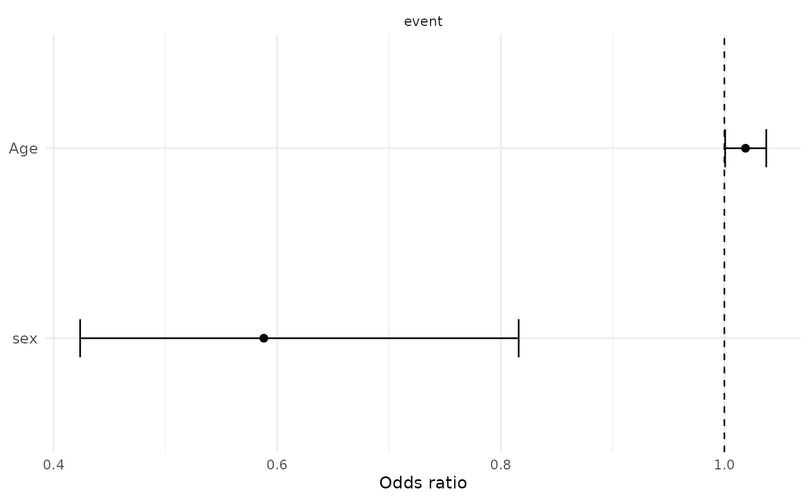

Cox Proportional Hazards Regression Table
Source:R/MakeCoxRegressionTable.R
MakeCoxRegressionTable.RdFits one Cox proportional hazards model per event-predictor pair and returns
report-ready tables plus a tidy results dataframe compatible with
PlotForestFromTable().
Usage
MakeCoxRegressionTable(
data,
time_var,
event_vars,
predictor_vars,
covariates = NULL,
design = NULL,
reference_levels = NULL,
Standardize = FALSE,
FDR = TRUE,
FDRAlpha = 0.05,
CheckPH = TRUE,
ReturnModels = FALSE,
Relabel = TRUE,
TreatOrdinalAs = "Categorical"
)Arguments
- data
Data frame containing the time, event, predictor, and covariate variables. When
designis supplied,dataprovides the variable-label contract and the design variables provide the modeling data.- time_var
Character scalar naming the follow-up-time variable.
- event_vars
Character vector naming event indicators.
- predictor_vars
Character vector naming predictors.
- covariates
Optional character vector naming adjustment variables.
- design
Optional
survey.designwhose variables contain all model variables. Models are fit withsurvey::svycoxph()when supplied.- reference_levels
Optional named list or named character vector giving the reference level for categorical predictors. Unspecified predictors retain their first factor level.
- Standardize
Logical. If
TRUE, standardize numeric predictors and covariates within each model's complete-case analysis set.- FDR
Logical. If
TRUE, addFDR, adjusted across all returned rows usingApplyFDRCorrection().- FDRAlpha
Numeric threshold used for FDR-adjusted significance.
- CheckPH
Logical. If
TRUE, calculate the globalsurvival::cox.zph()p-value for ordinary Cox models. Survey models returnNA.- ReturnModels
Logical. If
TRUE, retain fitted models inModelSummaries.- Relabel
Logical. If
TRUE, use attached variable labels.- TreatOrdinalAs
How ordered predictors and covariates are handled.
Value
A list containing:
FormattedTable: a report-facinggttable.LargeTable: a detailedgttable.Results: one row per predictor coefficient, with the tidy regression fields used byMakeUnivariateRegressionTable()plusEvents,Concordance,PH_PValue, and (when requested)FDR.ModelSummaries: fitted models whenReturnModels = TRUE, otherwiseNULL.Metadata: event coding, modeling engine, and analysis settings.
Details
Each model has the form Surv(time_var, event) ~ predictor + covariates.
Without design, models are fit with survival::coxph(). When design is
a survey.design, the corresponding design variables are used and models
are fit with survey::svycoxph(). N and Events are unweighted analytic
row counts in both cases.
Numeric events must be coded 0/1. Logical events use TRUE as the event.
For two-level factors, the second factor level is the event. Character event
variables are deliberately rejected so the event ordering is never implicit.
Examples
lung <- survival::lung
lung$event <- lung$status == 2
attr(lung$age, "label") <- "Age"
cox_results <- MakeCoxRegressionTable(
data = lung,
time_var = "time",
event_vars = "event",
predictor_vars = c("age", "sex")
)
cox_results$FormattedTable
HR (95% CI)
p-value
FDR
Age
sex
PlotForestFromTable(cox_results$Results)
